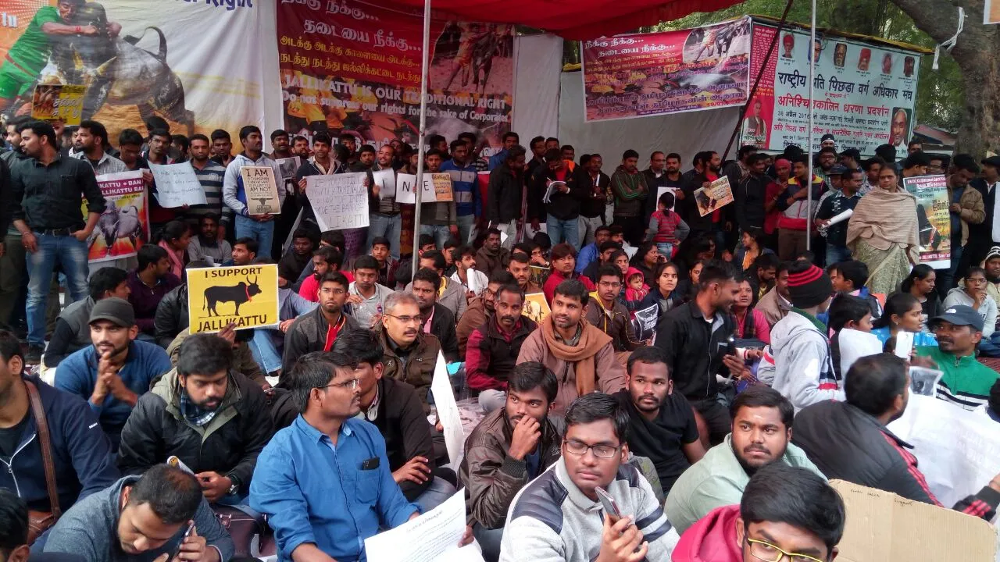
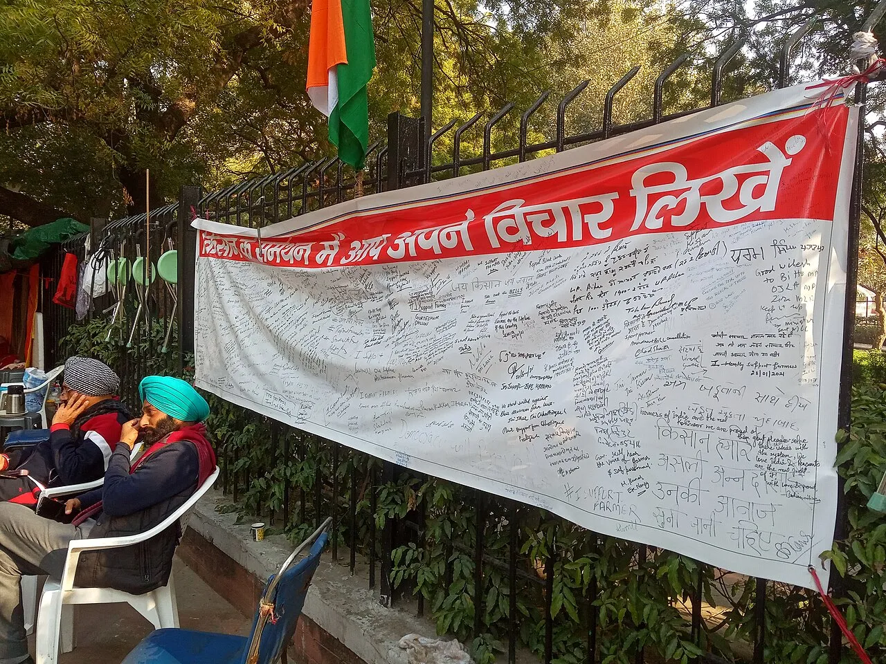
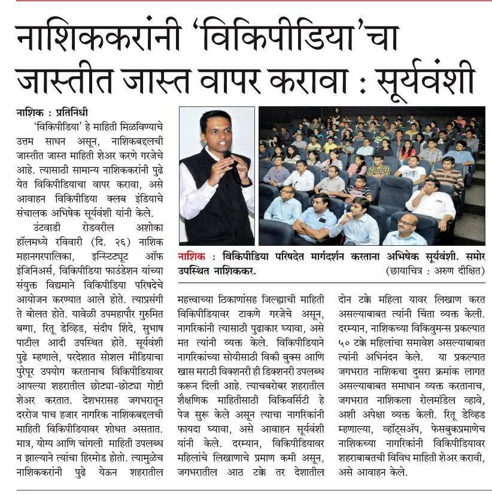

Press desk
What the media reported.
External reporting (open in new tab). We summarise; always verify on the original page.


CJP Founder Abhijeet Dipke Launches Indefinite Hunger Strike at Jantar Mantar
Following the eviction of activist Sonam Wangchuk by Delhi Police, Cockroach Janta Party founder Abhijeet Dipke has initiated an indefinite hunger strike in solidarity. Despite brief police detention and a reported ink attack on Dipke, CJP coordinators confirmed that the scheduled 'Chalo Sansad' peaceful youth march on July 20, 2026, remains fully active.
Demand status: Resignation of Education Minister Dharmendra Pradhan & complete audit of paper leak exams.
CJP: how the collective became an online sensation
From courtroom insult to millions of followers in under a week.
Read More →
Protests in 40°C heat
Why “cockroach” protesters stayed on the streets in New Delhi.
Read More →Official Encyclopaedia Entry
Origins, 5-point manifesto, leadership, timeline & legal proceedings.
Read More →
No electoral ambitions
Student-led reform campaign — Tiranga welcome, not party flags.
Read More →
Gen Z ‘cockroaches’ on the streets
Hunger strike and education-leak anger as a rallying point.
Read More →
Reclaiming Insults for Youth Power
How Gen Z turned courtroom criticism into a national satire movement.
Read More →
Indian Youth Political Parody
Satirical party phenomenon founded 16 May 2026 by Abhijeet Dipke.
Read More →🔴 LIVE GOOGLE NEWS & TRENDING POSTERS ENGINE
Today's Google News & Trending Movement Feed
Real-time live news updates fetched automatically from Google News, RSS feeds, and CJP Swarm Bureau regarding youth exams, NEET reforms, student protests, and trending posters.
Press Freedom & The Satirical Shield
In an era where critical journalism is increasingly circumscribed by corporate interests and legal intimidation, satirical publications and political parody movements play an essential role. By adopting theatrical exaggeration, the Cockroach Janta Party has managed to highlight systemic public issues that traditional news outlets often relegate to minor columns.
CJP’s media desk operates with absolute independence. We receive no funding from political lobbies, and our voluntary subscription base ensures that we can criticize institutions across the political spectrum. Our movement has been analyzed by media departments at universities globally as a prime example of modern Gen-Z digital activism—reclaiming disparaging narratives and transforming them into active, peaceful democratic pressure.
100% of server and maintenance costs are crowd-funded through small, voluntary personal contributions.
Supported by a loose association of student lawyers defending social media free expression rights.
Studied by researchers investigating how digital humor acts as a buffer against institutional pressure.
Card photos: illustrative Wikimedia Commons images (Delhi protests / youth / press). Not official BBC/Print photography — links open the original articles.